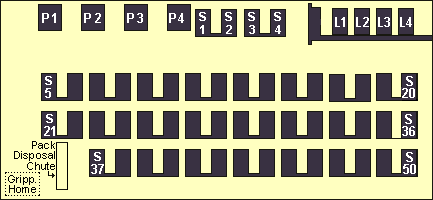

Aligning Reagent Load Tray to Bar Code Reader
This procedure describes how to align the reagent load tray to the bar code reader (BCR) by centering the BCR beam on the load tray bar code label 1.
Required Materials:
- No special tools are required
The reagent storage load tray interacts internally with the pack gripper, bar code reader (BCR), and reagent packs.
The manual alignments for this module include:
- Align reagent load tray bar code label 1 to bar code reader.

Note: The DxI 600 Instrument has two fewer load tray slots and two fewer pipettor nest storage slots than the DxI 800 instrument.
Caution: Do not use auto-alignment to align the reagent load tray to the bar code reader (BCR). Auto-alignment does not save alignments and is likely to fail when the initial alignment is too far from the center of the bar code label.
Note: Changes to alignment offsets are written to file:
- when the alignments are saved while exiting the Alignment screen.
- by selecting .
-
Open the SPU.
-
Loosen the locking screw.
The locking screw prevents the SPU from swinging outward from the instrument. It is not necessary to remove the screw because the SPU plate is slotted.

-
Pull the spring-loaded captive pin that holds the panel (located under the SPU) to the frame.

-
(For China and Canada Only.) On the front facing the edge of the Framus assembly, install the Chinese and French labels adjacent to the existing English label.
Note: The labels are in the DxI Installation Kit.

-
Loosen the locking screw.
-
Close the SPU.
The SPU is hinged on the left side. The right side is released and can be swung out from the instrument to approximately 45 degrees.Warning: The SPU off-load area slides forward and rearward as the SPU is swung in and out. To prevent damage to the SPU or the off-load area, confirm that nothing obstructs the movement of the off-load area as the SPU is moved.
-
Pull the spring-loaded captive pin to attach the panel (located under the SPU) to the frame.
-
Tighten the bolt that holds the SPU from swinging outward from the instrument (locking screw).

-
Pull the spring-loaded captive pin to attach the panel (located under the SPU) to the frame.